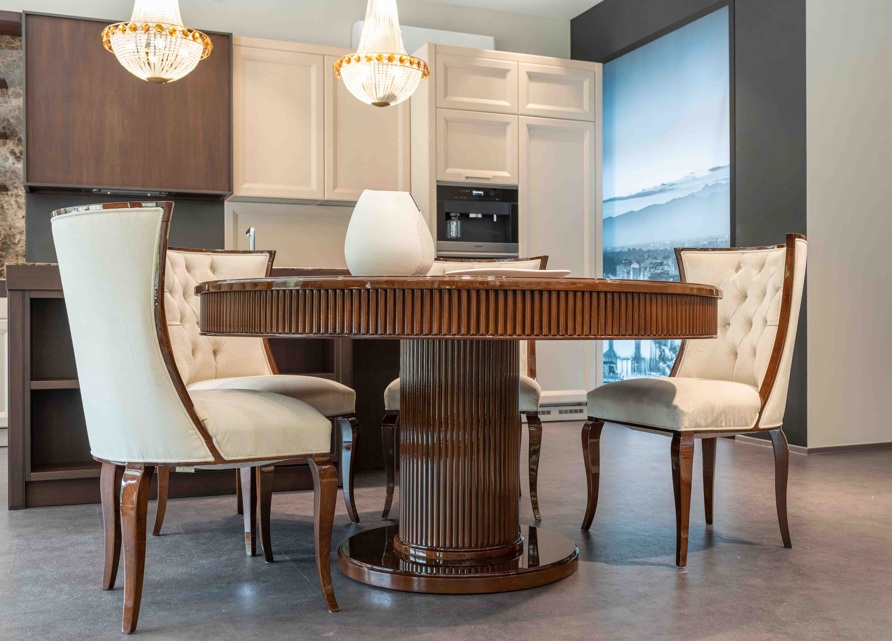
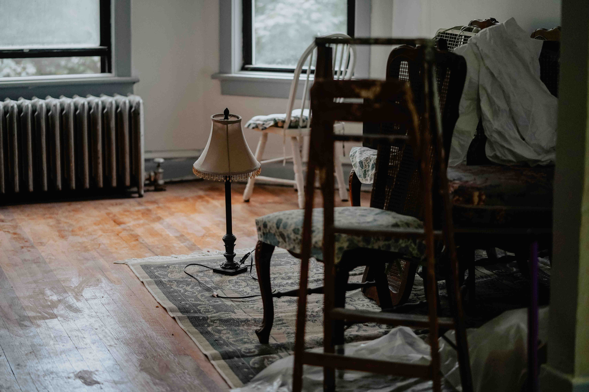

Finishing / 5 min READ
What Is French Polishing?
Understand shellac, hand application and why suitability matters.
Read article ↗THE FURNITURE JOURNAL
Practical ideas about wood, traditional finishes and thoughtful restoration.

FEATURED / FINISHING / 5 MIN READ
A hand-applied shellac technique can bring depth to suitable wood. Start by understanding what it does, where it fits and how it differs from other finishes.
Read the article ↗EXPLORE THE JOURNAL
Finishing / 5 min READ
Understand shellac, hand application and why suitability matters.
Read article ↗
Finishing / 6 min READ
Two different finishing approaches, with different uses and care needs.
Read article ↗Furniture Care / 4 min READ
Simple habits that help protect wood and its existing finish.
Read article ↗Restoration / 7 min READ
Why original material, patina and careful assessment come first.
Read article ↗Surface Repair / 4 min READ
What a mark may tell you and why treatment starts with the finish.
Read article ↗
Finishing / 6 min READ
Look beyond sheen and consider compatibility, use and maintenance.
Read article ↗Restoration / 5 min READ
Recognize finish wear and structural concerns before choosing treatment.
Read article ↗
Furniture Care / 4 min READ
Protect against spills and heat while following finish-specific advice.
Read article ↗
Finishing / 5 min READ
A closer look at shellac and its practical limitations.
Read article ↗
Restoration / 6 min READ
Avoid rushed refinishing and unnecessary removal of original surfaces.
Read article ↗Try a different search or category.
FROM READING TO RESTORATION